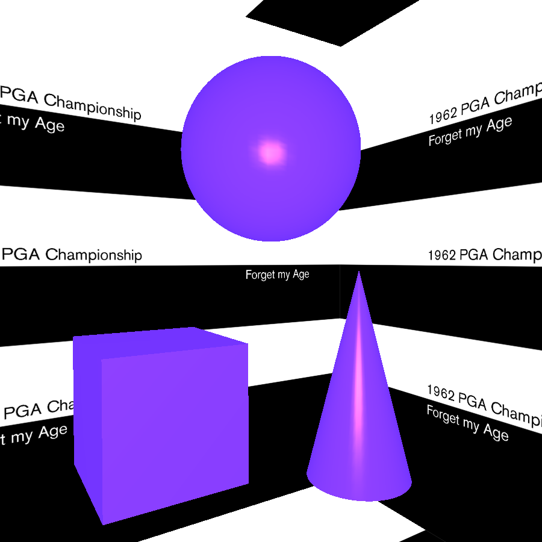
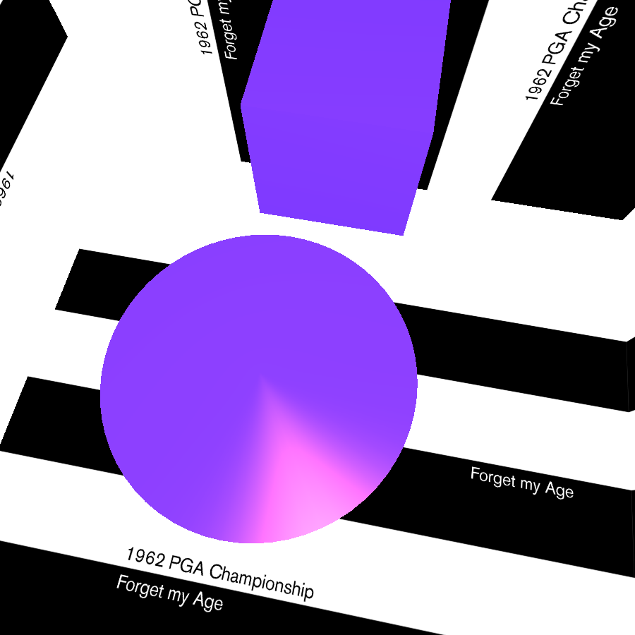
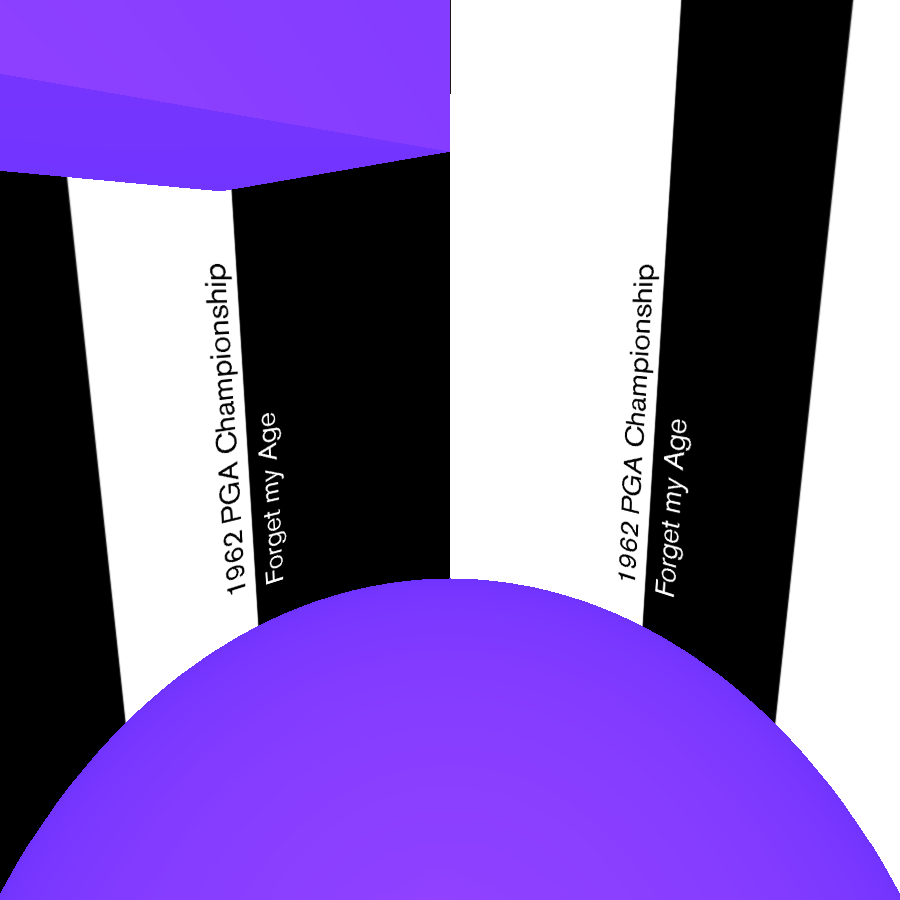
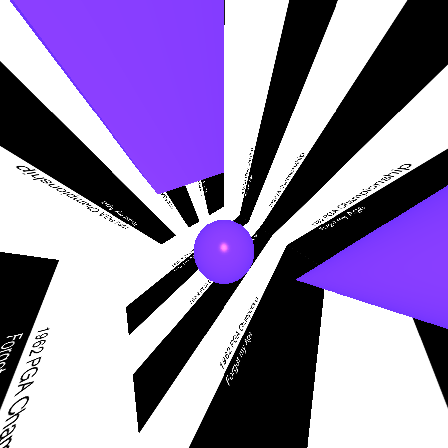
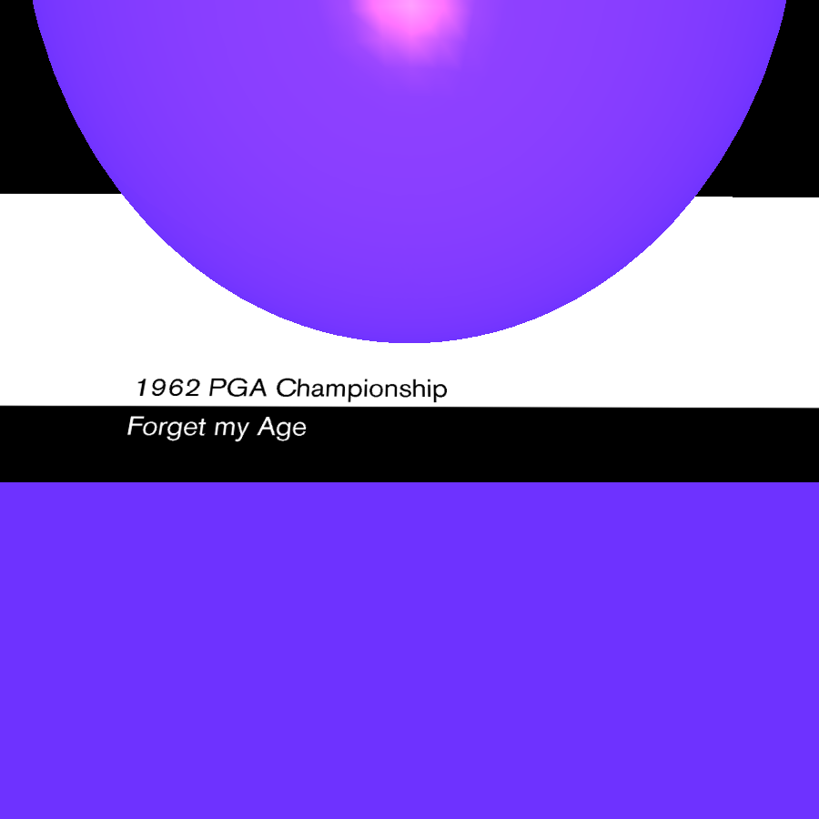
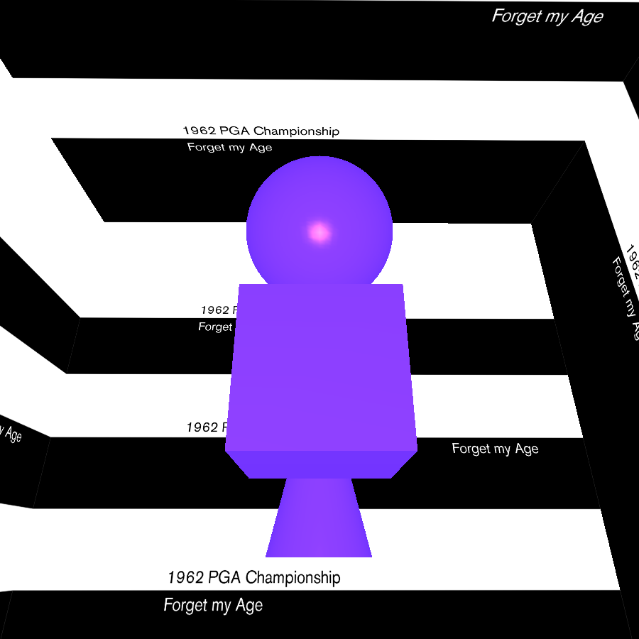

Nine tracks of Synth Wave Excellence from the famous british quintet.
—BBC Radio
Forget my Age
1962 PGA Championship
10.06.2016
2LP vinyl, Digital
CR007
A1. Front 9
A2. The Fairway
A3. Tiger in the Woods
B1. Left-Side Golf
B2. Go Green
C1. Swing the Clubhead
C2. Get Rich
C3. 575 Yards
D1. Hlinc






ECAL/Luca Kasper